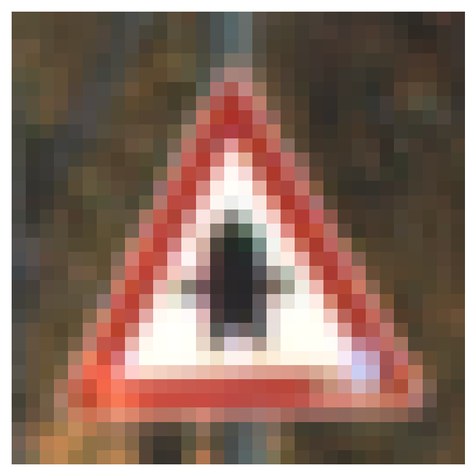
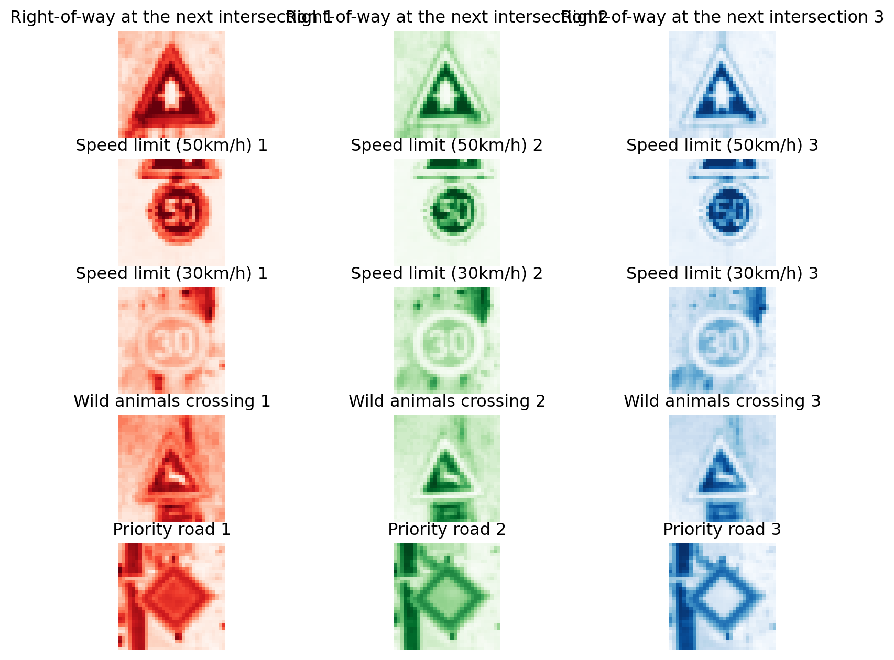
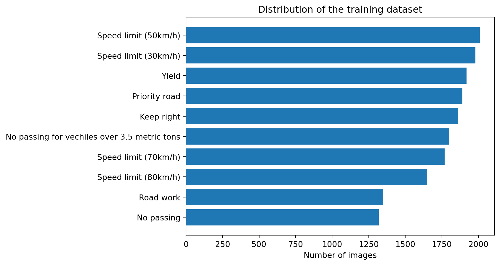

import numpy as np
import matplotlib.pyplot as plt
import random
import pickle
import pandas as pd
import cv2
from sklearn.ensemble import RandomForestClassifier
from sklearn.metrics import accuracy_scoreClassifying Traffic Signs with Machine Learning (Part 1)
Random Forest begins
This post is part 1 of the three-part series on classifying traffic signs with machine learning. In this part, I will show you how to preprocess images of traffic signs, reshape those images and use them with random forest algorithm for classification. Part of image pre-processing and visualization code comes from The Complete Self Driving Car Course github repo which has a MIT license 1.
Random Forest (RF) is generally believed to be a useful algorithm for regression and classification problems where training data is tabular. In this post though, I will be using RF to predict the class of traffic signs that are available as images. Therefore, I would first reshape the input images to tabular form as a large 2-dimensional array (matrix). In the later posts, I will use convolution filters for a neural network as well as RF again to make predictions.
Let’s begin by loading the required packages.
Load packages
Load data
I use the pickle package to load the training and test data. These two sets come from the german traffic signs bitbucket repo. The repo also contains a validation dataset, but I won’t be using it as I’m not doing any hyperparameter tuning in this post.
with open('german-traffic-signs/train.p', 'rb') as f:
train_data = pickle.load(f)
with open('german-traffic-signs/test.p', 'rb') as f:
test_data = pickle.load(f)What does the data look like?
Training data is a dictionary that has the following components:
train_data.keys()dict_keys(['coords', 'labels', 'features', 'sizes'])I only need the features (images) and their corresponding class labels. There are a total of 43 traffic sign types in these data. In the following piece of code, I rename the features and labels as training and test set pairs:
# Split out features and labels
X_train, y_train = train_data['features'], train_data['labels']
X_test, y_test = test_data['features'], test_data['labels']
# 4 dimensional
print("X_train shape:\n\n", X_train.shape, "\n")
print("X_test shape:\n\n", X_test.shape)
print("=========\n=========\n")
print("y_train shape:\n\n", y_train.shape, "\n")
print("y_test shape:\n\n", y_test.shape)X_train shape:
(34799, 32, 32, 3)
X_test shape:
(12630, 32, 32, 3)
=========
=========
y_train shape:
(34799,)
y_test shape:
(12630,)We can see that the training data and test data contain more than 34K and 12K images respectively. Moreover, these images are sized as 32 x 32 making a total of 32 x 32 = 1,024 pixels per image. The last number, 3, in the shape attribute indicates that these images are coloured with 3 channels of red, green and blue.
Visualizing data
Images are made of pixels that contain values from 0 (black) to 255 (white). The traffic sign images have 3 channels, therefore, each channel contains arrays of pixel intensity values. Following shows the first channel of a single image randomly picked from the training data:
np.random.seed(42)
num_images = 5
random_indices = np.random.choice(X_train.shape[0], num_images, replace=False)
random_images = X_train[random_indices]
random_images_classes = y_train[random_indices]
first_image = random_images[0]
first_image_class = random_images_classes[0]
np.set_printoptions(threshold=np.inf, linewidth=np.inf)
print(first_image[:,:,0])[[ 89 86 86 84 84 83 74 67 75 81 75 90 87 70 75 86 103 88 81 77 69 71 64 59 65 64 60 50 47 61 74 63]
[ 86 88 83 80 82 83 81 69 79 73 70 88 83 73 75 87 103 83 73 73 65 72 73 66 71 74 67 56 47 47 59 60]
[101 104 87 83 83 79 78 71 79 73 81 88 83 74 75 87 101 80 73 71 65 63 66 68 71 75 70 64 58 56 59 61]
[101 98 87 90 85 76 68 72 79 81 96 104 94 77 86 119 122 88 78 70 64 63 62 64 65 64 65 68 71 71 62 62]
[ 90 89 96 96 84 75 68 76 90 92 93 97 93 82 126 168 164 110 84 75 62 61 57 57 59 54 57 69 76 75 65 59]
[ 82 82 96 96 82 77 77 86 104 95 77 70 72 94 170 170 195 148 94 75 63 54 52 58 56 47 59 83 91 82 67 55]
[ 85 90 103 97 81 77 78 82 93 88 82 70 86 148 174 167 187 188 108 88 71 51 49 57 56 53 67 78 88 78 72 58]
[ 77 86 97 86 79 80 79 83 86 84 82 79 111 193 180 173 172 185 140 93 78 53 48 59 65 57 63 63 64 68 77 63]
[ 70 64 75 66 69 79 84 88 94 97 88 99 155 188 170 175 166 181 187 99 76 58 54 62 69 59 54 60 58 60 66 66]
[ 73 57 57 64 63 70 79 84 101 102 83 119 182 172 172 226 194 173 191 136 83 63 61 63 70 69 53 71 69 62 62 76]
[ 75 57 59 70 69 79 85 78 85 85 81 151 196 178 211 251 228 171 174 187 128 78 66 65 70 76 52 54 65 71 67 69]
[ 70 55 58 68 85 98 91 85 85 77 115 183 186 187 239 255 247 196 173 190 162 92 68 58 57 69 58 54 64 71 68 66]
[ 74 53 56 67 87 99 92 91 85 78 148 193 182 212 253 255 255 233 182 172 195 127 67 55 51 52 56 60 68 72 67 63]
[ 76 56 60 73 74 81 85 88 76 98 178 187 186 237 253 238 247 252 218 173 183 166 87 65 64 60 65 70 75 77 75 62]
[ 70 55 70 88 75 77 96 93 95 164 193 175 204 251 229 144 191 248 244 194 178 196 140 75 67 70 67 76 77 72 79 73]
[ 76 67 77 86 76 81 95 89 116 191 190 185 232 241 140 65 94 189 249 223 181 194 180 94 61 71 68 76 80 72 78 70]
[ 81 86 87 87 83 84 91 102 175 206 184 208 250 214 77 38 37 121 242 248 197 170 189 157 87 79 77 77 80 78 80 71]
[ 76 87 91 90 97 97 92 128 210 200 191 236 255 206 70 40 38 109 237 253 231 177 179 190 130 88 83 81 80 78 84 76]
[ 64 78 81 85 108 111 97 153 206 189 212 245 231 176 66 41 40 81 162 189 242 204 170 192 183 102 88 85 82 79 87 77]
[ 65 69 88 88 98 98 106 196 194 182 232 210 135 111 58 42 39 67 123 161 240 238 183 182 205 135 94 77 75 80 88 81]
[ 65 70 91 91 93 103 143 199 185 202 250 235 201 170 66 42 41 94 210 235 249 254 214 171 182 184 121 73 77 90 92 93]
[ 71 80 88 89 93 130 192 196 188 229 255 254 253 224 77 49 48 95 233 255 255 255 240 187 172 196 148 84 81 94 98 105]
[ 84 96 95 85 97 167 211 186 206 249 255 255 255 226 90 117 111 103 232 255 255 255 253 218 173 181 187 110 73 87 90 97]
[ 84 99 101 93 121 189 195 192 235 255 255 255 255 233 159 216 217 176 238 255 255 255 255 241 194 184 190 163 82 83 83 84]
[ 81 97 104 102 171 233 209 215 248 255 255 255 255 251 242 253 255 247 252 255 255 255 255 247 208 196 166 191 135 95 86 81]
[ 88 97 103 123 199 238 241 245 254 250 244 240 236 235 232 227 224 221 221 220 215 215 225 228 203 194 160 196 183 109 88 79]
[ 83 96 109 159 195 210 244 247 229 216 208 206 201 201 199 194 189 187 187 187 180 181 196 205 211 196 172 172 189 120 79 71]
[ 68 93 115 170 184 192 230 249 237 214 202 201 199 199 194 190 186 186 188 191 191 203 213 213 216 207 197 192 174 102 75 79]
[ 76 101 114 154 196 205 212 231 219 197 185 183 189 209 182 164 161 168 173 162 145 147 147 143 147 148 142 136 112 77 75 84]
[101 123 142 165 193 179 160 165 138 105 87 84 98 139 97 79 89 107 124 95 65 64 70 75 82 88 82 74 66 66 76 85]
[114 143 183 194 178 144 144 159 131 83 61 63 89 125 86 73 88 109 142 110 73 68 72 77 79 82 76 74 73 76 84 91]
[104 127 175 187 155 142 169 183 149 85 54 56 107 174 105 75 89 106 124 98 82 73 64 57 64 74 69 73 75 82 96 89]]Do you notice the triangle shape the numbers make? Let’s see the actual image:
plt.imshow(random_images[0]);
plt.axis('off');
The german traffic signs repo also contains a table with the sign label and description. Following shows the first few rows:
data = pd.read_csv('german-traffic-signs/signnames.csv')
data.head()| ClassId | SignName | |
|---|---|---|
| 0 | 0 | Speed limit (20km/h) |
| 1 | 1 | Speed limit (30km/h) |
| 2 | 2 | Speed limit (50km/h) |
| 3 | 3 | Speed limit (60km/h) |
| 4 | 4 | Speed limit (70km/h) |
Using the table above, I plot 5 images randomly picked from the training data and show each channel as follows:
df = data.loc[data.ClassId.isin(random_images_classes), ['SignName']].copy()
df = df.reindex(random_images_classes)
random_images_classes_namez = np.array(df['SignName'])plot = plt.figure()
plot.set_figwidth(10)
plot.set_figheight(8)
# plot each channel for the random images
for i in range(num_images):
for j in range(3):
plt.subplot(num_images, 3, i*3+j+1)
if j == 0: # Red channel
plt.imshow(random_images[i][:,:,j], cmap='Reds')
elif j == 1: # Green channel
plt.imshow(random_images[i][:,:,j], cmap='Greens')
elif j == 2: # Blue channel
plt.imshow(random_images[i][:,:,j], cmap='Blues')
plt.axis('off')
plt.title('{} {}'.format(random_images_classes_namez[i], j+1))
plt.show()
Hopefully, for people new to image classification, it is clear what we are dealing with. Let’s also look at the top five traffic signs in the training data:
num_of_samples=[]
namez=[]
cols = 5
num_classes = 43
for i, row in data.iterrows():
x_selected = X_train[y_train == i]
num_of_samples.append(len(x_selected))
namez.append(data.loc[i, 'SignName'])
# print(num_of_samples)
# print(namez)
# print(len(num_of_samples))
# print(len(namez))
num_of_samples = np.array(num_of_samples)
namez = np.array(namez)
ind1 = np.argpartition(num_of_samples, -10)[-10:]
ind1 = ind1[np.argsort(num_of_samples[ind1])]
num_of_samples_top5 = num_of_samples[ind1]
namez_top5 = namez[ind1]
plt.barh(namez_top5, num_of_samples_top5);
plt.title("Distribution of the training dataset");
plt.ylabel("");
plt.xlabel("Number of images");
plt.show();
Speed limit, no passing and yield signs are some of the most common signs in this training data. Having unequal number of images can affect the performance of a machine learning model as it is biased by the most frequent classes. But that’s a topic for another day.
Preprocessing data
Next, I preprocess the data as follows:
- Convert the original coloured image to a grayscale image. This would reduce the required computing resources as 3 channels are reduced to a single channel.
- Equalize the intensities of the image.
- Standardize the image by dividing each pixel intensity with 255.
def grayscale(img):
img = cv2.cvtColor(img, cv2.COLOR_BGR2GRAY)
return img
def equalize(img):
img = cv2.equalizeHist(img)
return img
def preprocess(img):
img = grayscale(img)
img = equalize(img)
img = img/255
return img
X_train = np.array(list(map(preprocess, X_train)))
X_test = np.array(list(map(preprocess, X_test)))Reshaping images
If I were to use a convolutional neural network, I would use the data as individual arrays of images, similar to how it is now. But RF needs the data to be in a tabular form, i.e., rows and columns for all data. Therefore, I reshape the data in a format where each row contains 32 x 32 = 1,024 columns of a single image:
num_pixels = (X_train.shape[1] * X_train.shape[2])
X_train = X_train.reshape(X_train.shape[0], num_pixels)
X_test = X_test.reshape(X_test.shape[0], num_pixels)
print(X_train.shape)
print(X_test.shape)(34799, 1024)
(12630, 1024)The numbers above show the rows and columns of training and test data.
Machine Learning
We are ready to fit a RF to the training data now. I use default values of all parameters but provide a random_state to make sure the results can be replicated. I also use n_jobs=-1 to take advantage of all cores of my system.
clf = RandomForestClassifier(random_state=0, n_jobs=-1)
clf.fit(X_train, y_train)RandomForestClassifier(n_jobs=-1, random_state=0)In a Jupyter environment, please rerun this cell to show the HTML representation or trust the notebook.
On GitHub, the HTML representation is unable to render, please try loading this page with nbviewer.org.
RandomForestClassifier(n_jobs=-1, random_state=0)
The model is fit and is now ready to make predictions. I make predictions on both training and test sets.
y_pred_train = clf.predict(X_train)
y_pred_test = clf.predict(X_test)And estimate the accuracy of predictions:
accuracy_train = accuracy_score(y_train, y_pred_train)
print("Train Accuracy:", np.round(accuracy_train))
accuracy_test = accuracy_score(y_test, y_pred_test)
print("Test Accuracy:", np.round(accuracy_test))Train Accuracy: 1.0
Test Accuracy: 1.0This test accuracy seems too good to be true. In practice, the model needs to be cross-validated and well-tuned.
Predicting a new image
Let’s see how our RF model does on an image downloaded from the internet. Following is the image:
import requests
from PIL import Image
url = 'https://c8.alamy.com/comp/A0RX23/cars-and-automobiles-must-turn-left-ahead-sign-A0RX23.jpg'
r = requests.get(url, stream=True)
img = Image.open(r.raw)#Image.open('STOP_sign.jpg')
plt.imshow(img, cmap=plt.get_cmap('gray'));
def preprocess2(img):
img = np.asarray(img)
img = cv2.resize(img, (32, 32))
img = grayscale(img)
img = equalize(img)
img = img/255
img = img.reshape(1, 1024)
return img
img = preprocess2(img)print("Predicted sign: "+ str(clf.predict(img)))Predicted sign: [12]This prediction is incorrect as the corresponding sign for this prediction is priority road sign. The actual road sign is turn left ahead sign.

With some hyperparameter tuning, the model may show better results. However, keep in mind that this is expected as without learning anything about the specific properties of a traffic sign (that convolution layers can extract), RF is not able to learn much from the raw pixel intensities.
Footnotes
MIT License
Copyright (c) 2019 Packt
Permission is hereby granted, free of charge, to any person obtaining a copy of this software and associated documentation files (the “Software”), to deal in the Software without restriction, including without limitation the rights to use, copy, modify, merge, publish, distribute, sublicense, and/or sell copies of the Software, and to permit persons to whom the Software is furnished to do so, subject to the following conditions:
The above copyright notice and this permission notice shall be included in all copies or substantial portions of the Software.
THE SOFTWARE IS PROVIDED “AS IS”, WITHOUT WARRANTY OF ANY KIND, EXPRESS OR IMPLIED, INCLUDING BUT NOT LIMITED TO THE WARRANTIES OF MERCHANTABILITY, FITNESS FOR A PARTICULAR PURPOSE AND NONINFRINGEMENT. IN NO EVENT SHALL THE AUTHORS OR COPYRIGHT HOLDERS BE LIABLE FOR ANY CLAIM, DAMAGES OR OTHER LIABILITY, WHETHER IN AN ACTION OF CONTRACT, TORT OR OTHERWISE, ARISING FROM, OUT OF OR IN CONNECTION WITH THE SOFTWARE OR THE USE OR OTHER DEALINGS IN THE SOFTWARE.↩︎